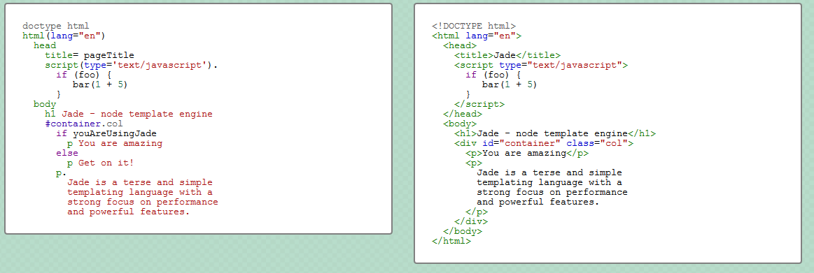

<!DOCTYPE html><html><head><meta charset="utf-8"><meta name="viewport" content="width=device-width, initial-scale=1, maximum-scale=1"><title>Tugas Presentasi TKPPL | Step untuk melakukan Inner Peace</title><link rel="stylesheet" type="text/css" href="bower_components/prism/themes/prism.css"><link rel="stylesheet" type="text/css" href="bower_components/todc-bootstrap-main/dist/css/bootstrap.min.css"><link rel="stylesheet" type="text/css" href="styles/main-presentation.css"></head><body></body></html><nav role="navigation" class="navbar navbar-default"><div class="container"><div class="navbar-header"><button type="button" data-toggle="collapse" data-target="presentation-chooser" class="navbar-toggle"><span class="sr-only"></span><span class="icon-bar"></span><span class="icon-bar"></span><span class="icon-bar"></span></button><a href="index.html" class="navbar-brand">Presentation TKPPL</a></div><div id="presentation-chooser" class="collapse navbar-collapse"><ul class="nav navbar-nav"><li class="dropdown"><a data-toggle="dropdown" href="#" class="dropdown-toggle">Pilih Presentation <b class="caret"></b></a><ul class="dropdown-menu"><li><a href="1-Introduction.html">Definition of Inner Peace</a></li><li><a href="2-Step.html">Step-Step Untuk Melakukan Inner Peace</a></li><li><a href="3-Berkaitan.html">Hal yang berkaitan dengan Inner Peace</a></li><li><a href="4-SCRUM.html">Finally</a></li></ul></li></ul></div></div></nav><article id="presentation"><section><h2>Bagaimana Menemukan / Mencapai Inner Peace ( Mengatasi Masalah Dalam Diri) :</h2><ul><li>1. Find it ! Cari dan gali permasalahannya, jangan lari dari masalahnya ataupun melupakannya.</li><li>2. Face it ! Hadapi kembali, lihat kenyataannya. Ini akan menimbulkan pemahaman baru.</li><li>3. Fix it ! Perbaiki dan cari solusinya.</li><li>4. Free it ! Bebaskan diri dari masalahnya dengan melihat dari perspektif baru.</li></ul></section><section><h2 class="Apa">pentingnya INNER PEACE?</h2><hr><ul><li>kehidupan luar adalah cerminan dari dalam diri. Segala masalah diluar diri akan otomatis selesai bila masalah dalam diri selesai. Untuk itu kedamaian di dalam diri menjadi sangat penting untuk menciptakan kedamaian di luar diri</li></ul></section><section><h3>Apakah dengan INNER PEACE juga dapat mendatangkan kesuksesan dan keberlimpahan?</h3><p>Inner Peace tidak membahasnya! Walaupun ada prinsip: segala sesuatu menjadi mungkin bila kita punya kedamaian jiwa, namun sekali lagi buku ini tidak membahas tentang kesuksesan dan keberlimpahan. Buku ini hanya menyelami kedamaian dalam diri yang kemudian sangat mungkin akan mendatangkan kesuksesan dan keberlimpahan.</p></section><section><h3>Apa saja yang diselami dalam INNER PEACE?</h3><p>Inner Peace tidak membahasnya! Walaupun ada prinsip: segala sesuatu menjadi mungkin bila kita punya kedamaian jiwa, namun sekali lagi buku ini tidak membahas tentang kesuksesan dan keberlimpahan. Buku ini hanya menyelami kedamaian dalam diri yang kemudian sangat mungkin akan mendatangkan kesuksesan dan keberlimpahan.</p></section><section><h2>Program ini dibuat untuk orang yang:</h2><hr><ul><li>Merasa didhalimi, dikhianati, diperlakukan tidak adil dan dibohongi.</li><li>Masih menyimpan dendam dan amarah.</li><li>Tidak bisa bahagia karena tersiksa oleh luka batin.</li><li>Takut dan khawatir terhadap hal yang belum pasti terjadi kepada diri Anda.</li><li>Susah menghadapi masa depan karena dihantui oleh masa lalu.</li><li>Ingin sembuh dari penyakit yang berulang-ulang akibat psikis (Psikosomatis).</li><li>Ingin berdamai dengan rasa bersalah dan penyesalan akibat pengambilan keputusan keliru di masa lalu.</li><li>Memutuskan untuk Cinta dan Hanif kepada diri sendiri dan orang lain</li></ul></section><section><h2>Bagaimana kita mengetahui inner peace kita kurang:</h2><hr><ul><li>1. Sering melarikan diri dari masalah. Misalnya: dengan mengkonsumsi alkohol..dugem gk terkontrol setiap menghadapi problem dll.</li><li>2. Mimpi yang berulang ulang terjadi. Ini biasanya problem yang berhubungan dengan sesuatu hal atau peristiwa dimasa lalu. </li><li>3.Ada perasaan tidak nyaman pada suatu benda atau orang. Ini menunjukkan adanya sesuatu yang tidak beres dimasa lalunya.</li><li>4.Ada emosi yang tidak wajar ketika mengalami sesuatu. Contohnya, seseorang menjadi histeris disaat mendengar sirine ambulans.</li></ul></section><section><h2 class="bullet">npm (node package manager)</h2><hr><ul><li>perangkat lunak manajemen paket untuk Node.js</li><li>memudahkan dalam <strong>menerbitkan</strong> dan menggunakan paket</li><li>mengurangi ketergantungan (<em>dependency</em>) dan konflik antar versi paket</li><li>mudah digunakan dan sederhana</li><li>dipaketkan dengan Node.js</li></ul></section><section> <h2>cara penggunaan npm</h2><code class="language-bash"><pre>npm install [nama-paket]</pre></code><p>instalasi semua paket Node.js dilakukan seperti ini</p></section><section><h2>Instalasi Grunt.js</h2><code class="language-bash"><pre>npm install -g grunt-cli
</pre></code></section><section><h2 class="bullet">Bespoke.JS</h2><hr><ul><li>pustaka untuk membuat presentasi dengan teknologi web</li><li>sangat kecil dan sederhana</li><li>modular dan mudah digunakan</li></ul></section><section><h2>Bespoke.JS</h2><p>Karena menggunakan teknologi web, kita harus menguasai 
HTML/CSS/JS terlebih dahulu (duh).
</p></section><section><h2>Demo Penggunaan Bespoke.JS</h2></section><section><h2 class="bullet">Membuat Presentasi Bespoke.JS</h2><hr><ol><li>Ambil kode <a href="https://raw.github.com/markdalgleish/bespoke.js/master/dist/bespoke.min.js">Bespoke.JS</a></li><li>Buat file HTML, masukkan kode Bespoke.JS</li><li>Buat file javascript yang menghubungkan Bespoke.JS dengan HTML</li><li>Buat file CSS, masukkan kelas-kelas Bespoke.JS</li><li>Buat slide sesuai dengan aturan HTML dan CSS Bespoke.JS</li></ol></section><section><h2>Ribet :(</h2><p>bisa lebih sederhana dengan generator-bespoke</p></section><section><h2>generator-bespoke</h2><code class="language-bash"><pre>npm install -g generator-bespoke
mkdir presentasi
cd presentasi
npm install -g yo
yo bespoke
</pre></code></section><section><h2>generator-bespoke (run)</h2><code class="language-bash"><pre>grunt server # akses di localhost:8000
</pre></code></section><section><h2 class="bullet">Jade</h2><hr><ul><li><em>Template Engine</em> untuk Node.js</li><li>menyederhanakan penulisan HTML</li><li><a href="http://jade-lang.com/">coba langsung</a></li></ul></section><section><h2 class="bullet">Jade Example</h2></section><section><h2 class="bullet">Stylus Example</h2><h3>Normal CSS</h3><code class="language-css"><pre>body {
 font: 12px Helvetica, Arial, sans-serif;
}

a.button {
 -webkit-border-radius: 5px;
 -moz-border-radius: 5px;
 border-radius: 5px;
}</pre></code></section><section><h2 class="bullet">Stylus Example 2</h2><h3>Stylus</h3><code class="language-css"><pre>border-radius()
 -webkit-border-radius arguments
 -moz-border-radius arguments
 border-radius arguments
 
body
 font 12px Helvetica, Arial, sans-serif
 
a.button
 border-radius 5px
 </pre></code></section><section><h2>Demo Penggunaan Bespoke.JS</h2><p>(dengan generator-bespoke)</p></section><section><h2 class="bullet">Membuat Presentasi Bespoke.JS </h2><h3>(dengan generator-bespoke)</h3><hr><ol><li>instalasi dan jalankan</li><li>tambahkan slide dengan kode jade (<code class="inline">index.jade</code>)</li><li>ubah tampilan dengan kode stylus (<code class="inline">styles/main.sty</code>)</li></ol></section></article><script src="bower_components/bespoke.js/dist/bespoke.min.js"></script><script src="bower_components/bespoke-bullets/dist/bespoke-bullets.min.js"></script><script src="bower_components/bespoke-scale/dist/bespoke-scale.min.js"></script><script src="bower_components/bespoke-hash/dist/bespoke-hash.min.js"></script><script src="bower_components/bespoke-progress/dist/bespoke-progress.min.js"></script><script src="bower_components/bespoke-state/dist/bespoke-state.min.js"></script><script src="bower_components/prism/prism.js"></script><script src="bower_components/prism/components/prism-bash.min.js"></script><script src="scripts/main.js"></script><script src="bower_components/jquery/jquery.min.js"></script><script src="bower_components/todc-bootstrap-main/dist/js/bootstrap.min.js"></script>